gHRV
A graphical tool for Heart-Rate Variability analysis
This project is maintained by milegroup
Table of contents
Overview
Heart Rate Variability (HRV) can be defined as the variations in the sequence of periods between consecutive heartbeats, and it is regulated by factors extrinsic to the circulatory system. Variability is the result of a trade-off between the influence of the parasympathetic system (accelerating the heart rate) and the sympathetic system (slowing the heart rate). This relationship was experimentally determined by Aselkrod in 1981 [Aksel81]. Since then, its clinical usefulness in various pathologies such as myocardial infarction, hypertension, heart failure, transplantation, etc, has been studied [Malik95] [Task96]. The typical HRV spectrum of a healthy person at rest is mainly composed of two components: a low frequency band (LF), from 0.04 to 0.15 Hz; and a high frequency band (HF) ranging from 0.15 to 0.4 Hz.
HRV analysis has been a very active research field for the last twenty years. Distinct techniques have been proposed in this area, such as spectral analysis, non-lineal techniques or time-domain methods [Achar06] [Chang07] .
At the present moment, HRV analysis has not been established as a standard method for diagnosis. This has conducted providers of medical technology at excluding this type of analysis in their devices, and researchers depend on software applications in order to apply additional processing methods.
The common factor for all the algorithms aimed at helping clinicians in the HRV analysis is the fact that the majority of them have been implemented by particular investigation groups, which are forced to develop their own and proprietary software, due to the lack of a common software package, easily accessible and downloadable, that fulfills the particular requirements of each research association.
To perform this task, many programming languages are employed, such as Matlab [MatHRV], Java [Bogu11], or even LabView [Nati09]. Other software packages also deserve comment, such as the Kubios-HRV [Tarv14].
Many applications can be found in the literature, including generation of correlated discrete ordinal data arising from longitudinal studies of medical research [Ibra11], detection of breast cancer [Roca12], population pharmacokinetic modeling for analyzing drugs effects and individual variations [Sun11], or time-series analysis [Koso11].
Due to the growing scientific community developing specific software, and attending to the requirements of researchers, that usually need to unify software functionality into one open source and easily extendible tool, we have developed gHRV, a software package for HRV analysis (partially based on RHRV [Rodr11]), in an attempt to help clinicians in the analysis of the heart rate. gHRV offers a powerful and simple graphical interface. Central ideas behind its design are easy of installation and of use.
gHRV has been implemented employing Python [Pyth], based on object oriented programming (although it also supports imperative and functional programming), giving clean and legible code, which improves software maintenance. Besides, it makes a quite efficient use of memory and it is very extensible, thanks to libraries available to programmers. These advantages make Python one of the ten most used programming languages in this moment. Appart from these benefits, Python provides:
- A high grade of efficiency and portability.
- Efficient and flexible libraries, which allow to implement a graphical interface, advanced mathematical functions and highly customizable plotting capability.
- Developing tools (IDEs or Integrated Development Environments, compilers, debuggers...) freely available for distinct operating systems.
gHRV is a simple and easy-to-use graphical interface, and guided interaction with the user is performed in order to minimize errors and functional problems. With this purpose, the interface enables or disables interactive elements depending on the state of the interaction.
An important functionality of gHRV is the possibility to deal with different episodes (apnea, ischemia,...), creating or adding new episodes or deleting existing ones, and to obtain time evolution of power in frequency bands.
The following main functionalities are provided:
- Heartbeats: file loading and exporting, automatic filtering, manual filtering and interpolation.
- Episodes: file loading, removing all episodes and editing.
- Frame-based evolution: time evolution of power in frequency bands, and non-linear and temporal parameters.
- Poincaré plots: representation of the Poincaré plots of the RR (beat-to-beat) intervals.
- Significance analysis: statistical analysis of spectral parameters, in and out episodes.
Details of the implementation and installation instructions are given on the following.
Getting Started
License and Disclaimer
This program is free software: you can redistribute it and/or modify it under the terms of the GNU General Public License as published by the Free Software Foundation, either version 3 of the License, or (at your option) any later version.
The programmers of this software provide the software below “as is," and you use the software at your own risk. This program is distributed in the hope that it will be useful, but WITHOUT ANY WARRANTY; without even the implied warranty of MERCHANTABILITY or FITNESS FOR A PARTICULAR PURPOSE. No oral or written communication from or information provided by the programmers shall create a warranty. Under no circumstances shall the programmers of this software be liable for direct, indirect, special, incidental, or consequential damages resulting from the use, misuse, or inability to use this software.
System Requirements
gHRV runs on Windows, Linux or OSX operating systems. Minimal system requirements are:
- Windows: Windows XP or newer, 32 or 64 bits.
- OSX: MacOSX Lion or newer.
- Linux: Recent distribution based on deb packages. Tested on Ubuntu 11.10, 12.04 LTS, 12.10 and 13.10.
Downloading gHRV
gHRV can be downloaded from https://milegroup.github.com/ghrv/packages.html. gHRV is distributed as free software (GNU GPL) and binaries for Windows, MacOSX and Debian/Ubuntu systems are provided as well.
For downloading gHRV, select the corresponding version for your operating system. Although different versions are avalaible, we recommend the most recent 1.5. In this documentation, X and YY refer to the version and the subversion of the gHRV program.
In https://milegroup.github.com/ghrv/packages.html the source code and some example files are also avalaible:
- An ascii file containing beats positions: beat_ascii.txt.
- An ascii file containing episodes: episodes.txt.
- A simple gHRV project with episodes: SimpleProject.ghrv.
- A gHRV project containing samples during and after physical exercise: Training.ghrv.
- An example of a report created by gHRV and exported as html: TrainingReport.zip.
Installing gHRV
Windows
Windows binary is available as a gHRV_X_YY.msi file. Installation is straightforward: double click on the file. First, the installer must be authorized to proceed.
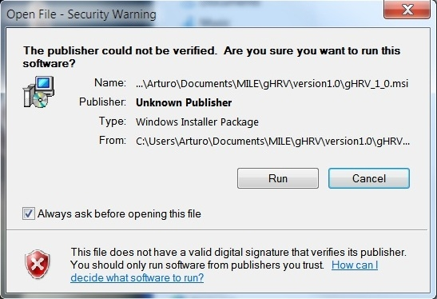Windows installation: security warning
The gHRV setup wizard opens: follow the instructions to complete the installation process.

Windows installation: setup wizard
After license agreement, gHRV is installed on your system. Installation also creates a link of the tool in your desktop.
gHRV has been tested on Windows XP and Windows 7 (32 and 64 bits).
OSX
OSX binary is distributed as a gHRV_X_YY.dmg file. Depending on the security configuration of the computer, it may be possible that the system does not allow to install the program the usual way. In this case, the simplest and easiest way is to CTRL-click (or right click) the gHRV_X_YY.dmg file, and on the revealed context menu, choose ‘Open.’ A new window will appear with a file named gHRV.app inside.
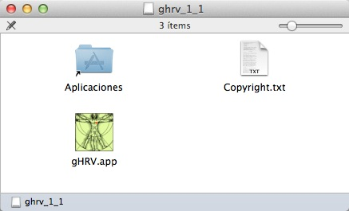OSX installation: folder containing the installation files for gHRV
Just drag this file to the Applications folder.
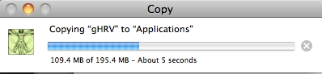Installing gHRV in OSX
Then, you can eject the unit that was mounted by the .dmg file. gHRV has been tested on OSX Mountain Lion, Lion and Mavericks.
Deb-based linux systems
gHRV is distributed as a gHRV_X.YY_all.deb package. The easiest way to install is to download this package, open a terminal and change to the directory where the file is. Then use the commands:
$ sudo apt-get install gdebi
$ sudo gdebi gHRV_X.YY_all.deb
gdebi installs gHRV and its dependencies. The program is avalaible both in the Start menu and in console mode as gHRV.
You can also install gHRV using the Software Centre by double-clicking on the .deb file.
gHRV has been tested on Ubuntu desktop from 11.10. Users of Ubuntu 20.04 and newer must install gHRV 2.0
Source package
gHRV sources are distributed as a gHRV_X.YY.tar.gz. Advanced users can run the program from the source code. A working interpreter of the Python programming language is needed with the following libraries:
- Matplotlib
- wxPython
- Numpy
- Scipy
In Linux debian-based systems, just open a terminal and use one of the following commands. For Ubuntu 15.10 and lower:
$ sudo apt-get install python-numpy python-wxgtk2.8 python-matplotlib python-scipy python-tk
For Ubuntu 16.04 and higher:
$ sudo apt-get install python-numpy python-wxgtk3.0 python-matplotlib python-scipy python-tk
Then, go to the directory where the .tar.gz was extracted and use:
$ python gHRV.py
Ubuntu 20.04 requires the use of python version 3, instead of python2. In this case, the required libraries can be installed:
$ sudo apt-get install python3-numpy python3-wxgtk4.0 python3-matplotlib python3-scipy python3-tk
Then, go to the directory where the .tar.gz was extracted and use:
$ python3 gHRV.py
Uninstalling gHRV
Windows
To uninstall gHRV, go to Start -> Control Panel -> Add or Remove programs, select gHRV and press the Remove button.
OSX
To uninstall gHRV, just drag the gHRV program from the Applications folder to the Trash folder.
Deb-based linux systems
To uninstall gHRV, open a terminal and use the command:
$ sudo apt-get remove ghrv
Updating gHRV
To update gHRV to a newer version, just make a new install with the procedure decribed above. The installation procedure updates the program automatically.
Known Issues
OSX
There is some focus problem in OSX implementation of wxpython libraries. The effect of this problem is that sometimes, just after running gHRV, new windows are not shown. Normally, clicking on the gHRV icon in the dock solves this problem.
Deb-based linux systems
If Linux version is called from a terminal, there maybe a warning (Gtk-WARNING **: Unable to retrieve the file info...) in the terminal when saving a new project. This is caused by the implementation of file dialogs in some libraries. Users can ignore this message since the file is saved correctly.
Using gHRV Software
Running gHRV
gHRV application provides a broad functionality related to HRV analysis, and can be easily and intuitively used, presenting results in a very illustrative and attractive way for the user. To execute gHRV just click on the icon.
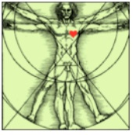gHRV icon
The main window of gHRV will be shown. On the left hand side of the window, several options can be selected. After starting gHRV, the user can select to load either a project or a hear rate data file, by clicking the corresponding option. The remaining functionalities are activated either when data are avaliable or it becomes possible to perform the action.
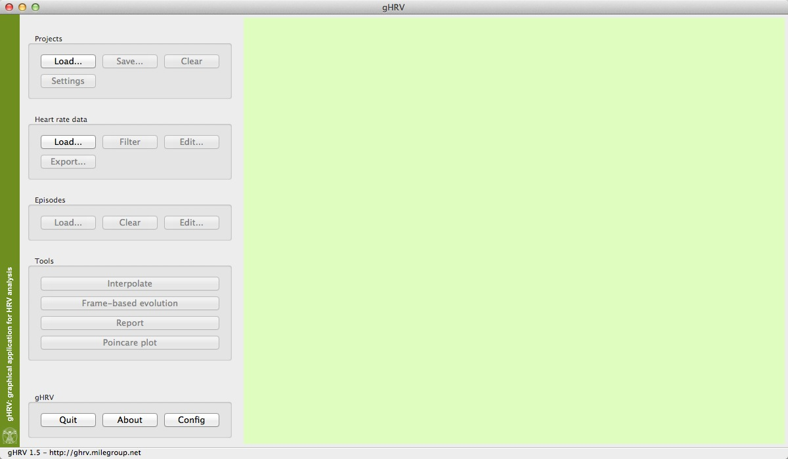Initial view of gHRV
A detailed description about all the options are given in the next Sections of this manual.
Running gHRV from terminal (GNU/Linux)
gHRV can be run from a terminal when installed on a GNU/Linux system. This mode allows users to instruct gHRV to load beats files and episodes files or interpolate and automatically filter heart rate records. After these operations are performed, gHRV opens its graphical interface exactly as these operations were done using the graphical capabilities of the program.
For more information, open a terminal in linux and use the following command:
$ gHRV -help
Projects Panel
Load
gHRV can create .gHRV project files, with a specific format, that can be imported later. To load a previously created project, just click on Load, and select the corresponding file project. As an example, you can download from the web page http://milegroup.github.com/ghrv/packages.html the file SimpleProject.gHRV.
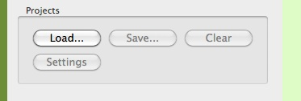Initial loading options for gHRV
If the file format is not accepted by gHRV, an error message will appear.
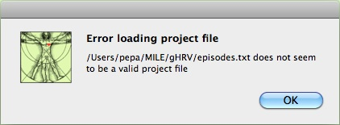Initial project loading error message
After the project has been loaded, the Load buttons are all disabled, and the Save, Clear and Settings options from the Projects Panel are now enabled.

gHRV project retrieved from SimpleProject.ghrv file
In the upper left corner of the graph area, buttons for zooming in or out and panning the graph, and for saving the plot can be observed.
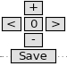Buttons for zooming, panning and saving the plot
These functions allow the user to manipulate the graphical representation and to exports plots that can be used in other programs. Exporting formats are .jpg, .png, .pdf, .svg, .tif and .eps (availability of some of these formats depends on the operating system).
Save
Save button allows users to save projects.
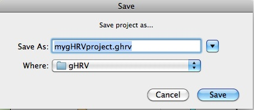Saving a new project in gHRV
Clear
Just click on the button, and a confirmation window will appear, giving the user the possibility of removing the project from the gHRV active interface.
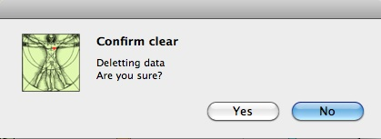Removing a project from gHRV memory
Settings
Settings button can be used when either frequency or window analyzing values are to modified. This options will be explained when describing the Config option, in the gHRV panel. The project name can also be changed (not the file name, for this option you must use Save).
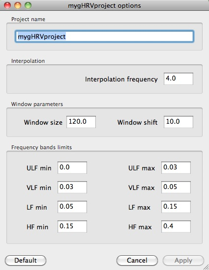Settings options panel
When clicking Apply, a new window appears, asking for confirmation.
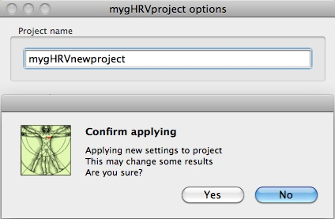Setting options panel: creating a new project
Heart Rate Data Panel
gHRV reads different heart rate data file formats: Polar, Suunto, ASCII (beats and RR series) and WFDB (qrs) beats files. As an example, you can download from the http://milegroup.github.com/ghrv/doc.html the file beat_ascii.txt, where data are in a single-column ascii file, indicating the beats position from a previously annotated ECG file.
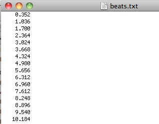Accepted format file for heart rate data
The instantaneous heart rate can be defined as the inverse of the time separation between two consecutive heart beats. Once the beats have been loaded, the heart rate is calculated. In mathematical terms, this corresponds to the calculation of the series:
HR(i)=1000/[T(i)-T(i-1)]
where HR(i) is the instantaneous heart rate, and T(i) is the position of the i-th beat, measured in milliseconds.
Load
To load a heart rate data file, just click on Load, and select the corresponding file.
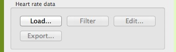Initial loading options for heart rate data panel
If the data file format is not accepted by gHRV, an error message is displayed.
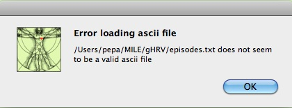Initial heart rate data file loading error message
After a file has been loaded, it can be observed that the Load button is diabled, and Filter, Edit and Export buttons in the Heart Rate Data Panel are now enabled, and can be used.
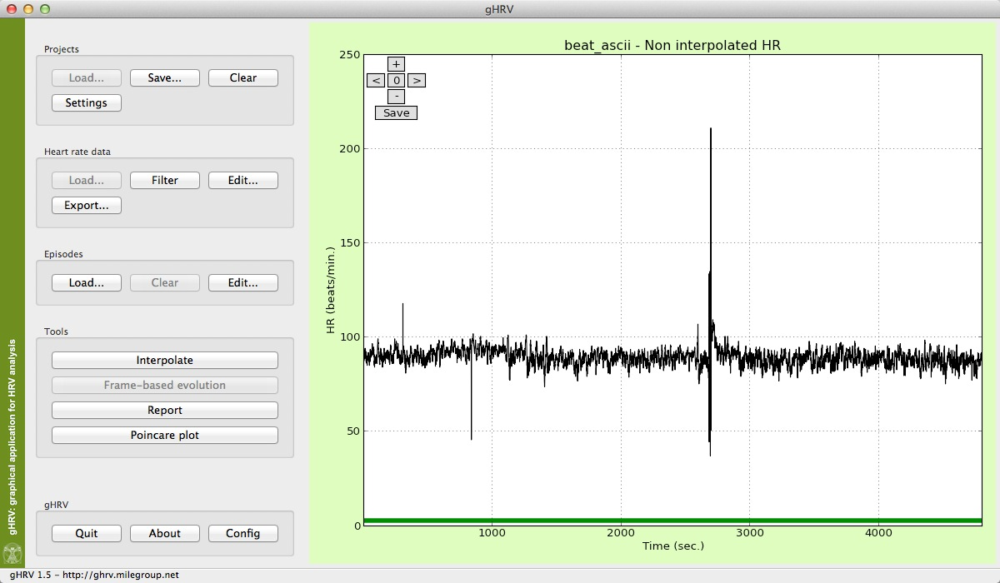Heart rate data shown in main window
In order to load beats from a WFDB record, just open the .hea file. gHRV will read this header file and a new window will appear where the user can select the anotator format.
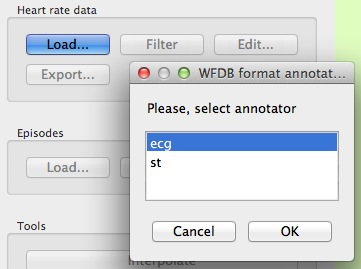gHRV reading a .hea WFDB header file
Filter
Filter button obtains a filtered version of the heart rate data. This functionality can be used to reject erroneous heart beats that distort the result of the analysis. It uses an algorithm based on adaptive thresholds and also eliminates points that are not within acceptable physiological values.
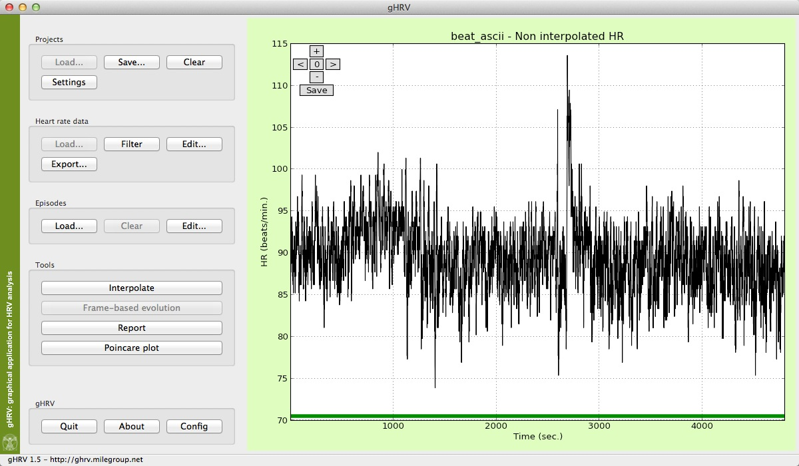Filtered heart rate data obtained with the Filter button
Edit
Ocasionally, users may desire to remove specific artifacts or points in the heart data. The Edit functionality performs a manual edition, removing points by selecting them on a graphical window.

Edit and remove data to remove points
Just select a rectangular area containing the points to be eliminated by clicking the oposite corners. A green rectangular area containing the points will appear in the graphic window. At the bottom of the window, information about the selected points to be removed is also shown.
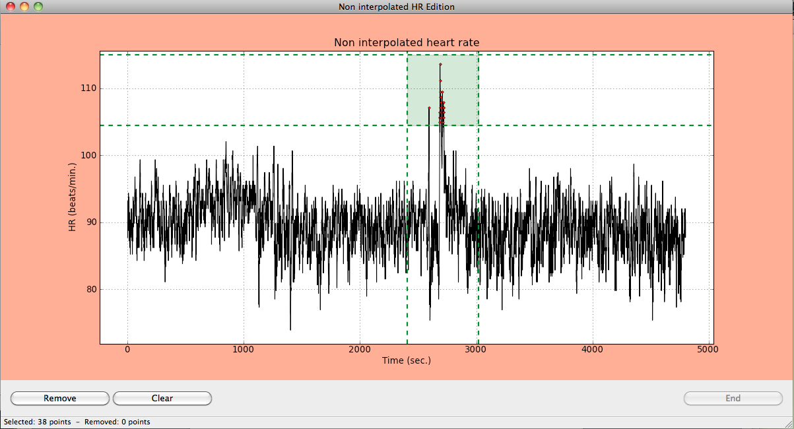Rectangular area containing the points to be eliminated
To remove the selected points, just click on the Remove button; in other case, just click Clear and return to the previous step. Repeat the process until you have finished to remove points. Press End to finish the removing process. A new window asking for confirmation appears before the removal.
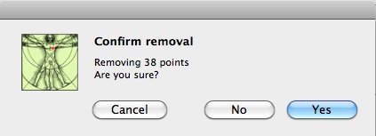Window containing a confirmation message for removing data points
Export
The Export button allows users to obtain a .txt file containing the heart rate signal obtained after filtering and edition. A new window appears to select the format of the output file before saving the file.
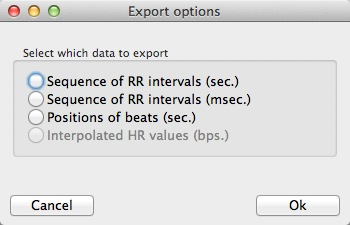Export the heart rate data to a .txt file
Episodes Panel
In many ocasions, ECG files may be accompanied by episode files, reflecting specific situations of ischemia or apnea, for example. With gHRV, functions for loading and editing these episodes are provided.
The data corresponding to these episodes can also be incorporated to the gHRV analysis. To perform this, data should be in the format provided in the apnea_ascii.txt file, available at the web page http://milegroup.github.com/ghrv/packages.html.
Each file line must contain the begin time (Init_Time), a tag identifying the type of episode (Resp_Events) and its duration (Durat). Some episodes files contain also a numerical value associated with the episode (SaO2 in the example) that is not read by gHRV.
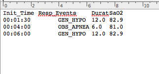Accepted format file for episodes data
Episodes contained in WFDB records can be read too.
Load
To load episode file, just click on Load and select the corresponding file. 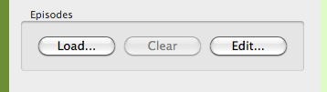
Initial loading options for heart rate data files
If the data file format is not accepted by gHRV, an error message is displayed.
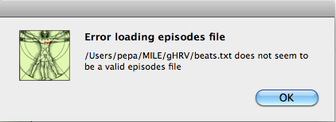Initial episode data file loading error message
gHRV also reads annotations from WFDB records. In this case, just open the .hea file and the program will read this header file and ask the user can select the anotator he wishes to load. A list of episodes type will appear to allow users to select the specific episodes to load.
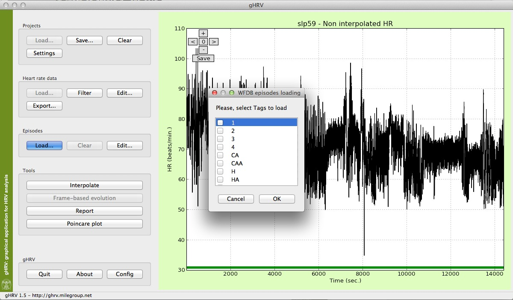gHRV reading episodes from a WFDB record
After successfully loading an episodes file, the Load button will be disabled, while the Clear and Edit buttons will be active.
Clear
Use this button if you want to remove the information about episodes included in the heart rate data.
Edit
To add new episodes to your heart rate date, click on the Edit option, and a new window will appear.

Episodes edition window
Users can add new episodes by clicking at the beginning and at the end of the episode in the graphical window. In the right panel, the text box in the Add panel accepts a tag for the episode. The Add episode button incorporates it to the data. Different colors for the different tags of episodes are automatically selected.
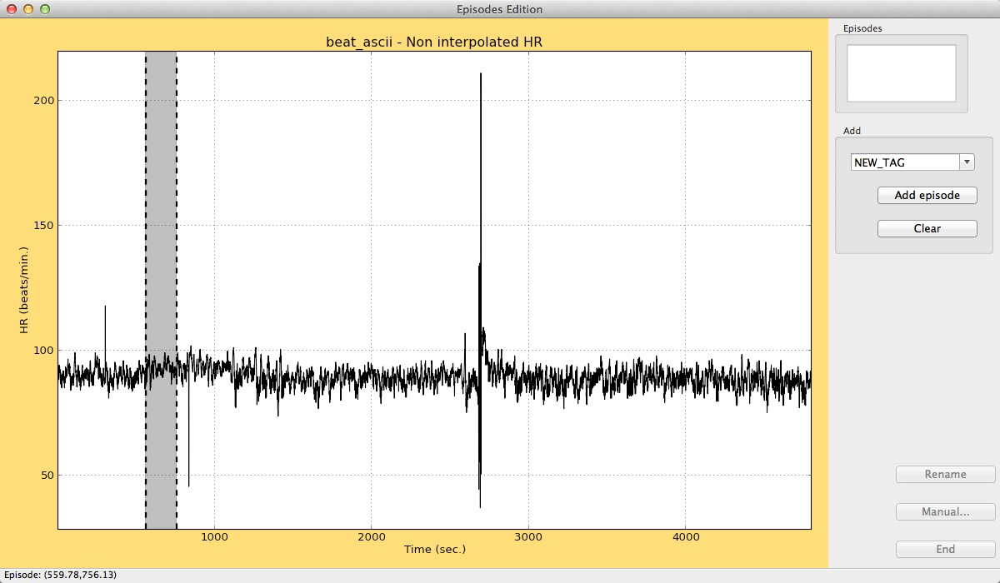Adding an episode
At the bottom of the window, information will be given about the position of the new episode.
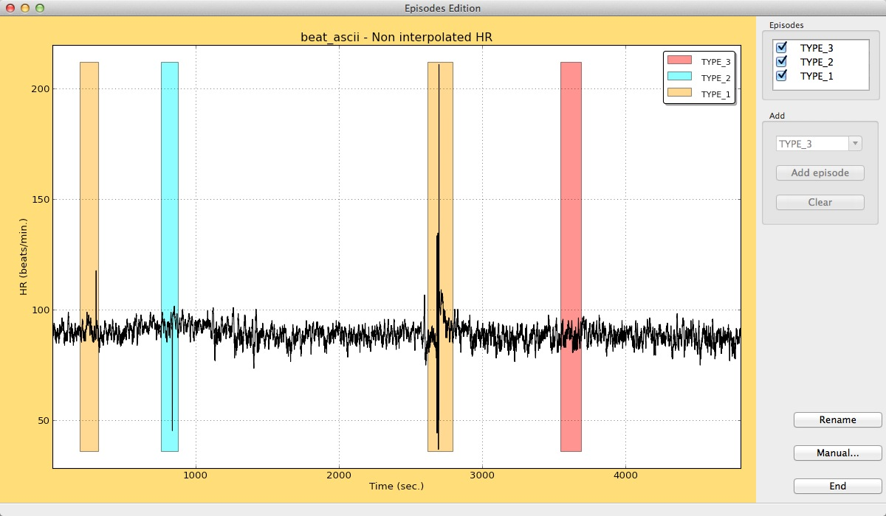Result of adding several episodes in gHRV
Users can also create, modify or remove episodes by clicking the Manual button. In this case, a new window will appear, allowing the user to modify the information, removing existing episodes or adding new ones. Just click on the Add option, or select one episode and click Edit to modifiy or remove it. Click on the End button when all the modifications have been made.
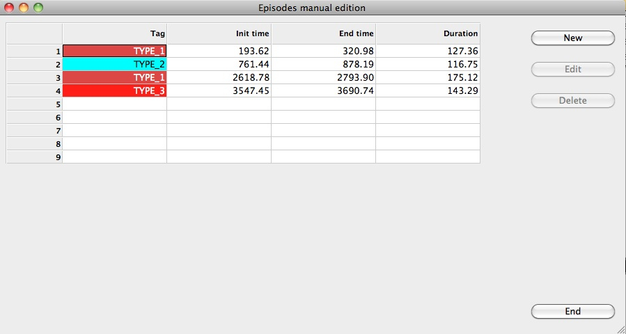Manual edition of episodes
Episodes can be renamed using the Rename button. This functionality allows users to replace one tag with another, thus affecting all the episodes labelled with this tag.
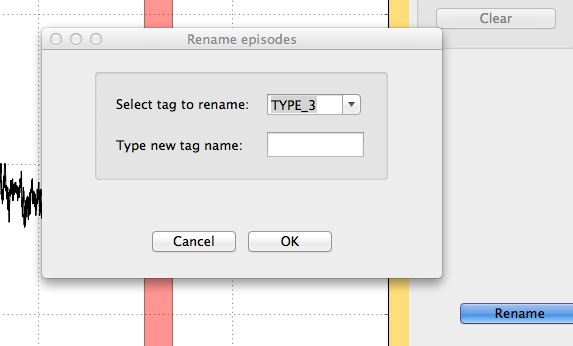Renaming of a tag
Tools Panel
Functionalities on the Tools Panel can only be used when a heart rate signal is loaded.
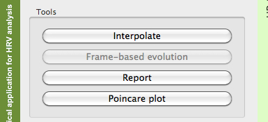Options for the tools panel
Interpolate
This button interpolates the heart rate signal, applying a linear interpolation. The default frequency for interpolation is 4 Hz, even although it can be modified in the Config option of the gHRV Panel (this will be explained in the corresponding Section of this Manual). A new heart rate signal adequate for Fourier spectral analysis appears in the graphical window, preserving the episodes information (if present).
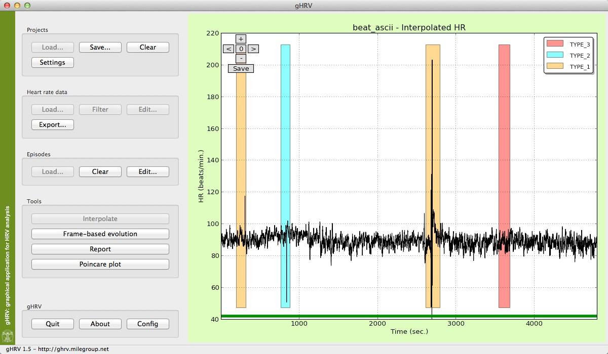Interpolated signal in gHRV
Interpolation button is now disabled, and it becomes possible to click in the Frame-based evolution button for performing spectral analysis.
Frame-based evolution
In order to estimate the spectral power, spectrogram of the signal is first calculated, employing the SHort-Time Fourier Transform (STFT). A Hamming window is used with default values of width and shift of 120 and 60 sec., respectively. These default values can be modified in the Config option of the gHRV panel. Next, the power in various spectral bands is obtained:
- ULF: power in the ULF band (0.0-0.03 Hz).
- VLF: power in the VLF band (0.03-0.05 Hz).
- LF: power in the LF band (0.05-0.15 Hz).
- HF: power in the HF band (0.15-0.4Hz).
These limits for the bands can be modified in the Config option from the gHRV panel. Other parameters are also calculated:
- LF/HF ratio: defined as the ratio for the LF and the HF bands.
- Power: total value for the spectral power.
- Mean HR: mean heart rate value.
- HR STD: heart rate standard deviation.
- pNN50: percentage of differences between adjacent intervals that are >50 msec.
- rMSSD: square root of the mean of the squares of the differences between adjacent intervals.
- ApEn: approximate entropy.
- FracDim: fractal dimension.
- Heart rate: data employed to perform the analysis.
For performing spectral analysis, just click the Frame-based evolution button, and a window indicating the calculation process in progress will appear.
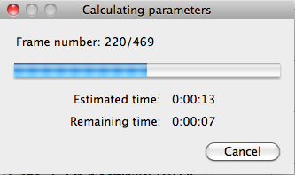Frame-based evolution calculation
After the calculation is finished, a window containing information about the parameters is presented. Information of episodes is also shown (if present in the data).
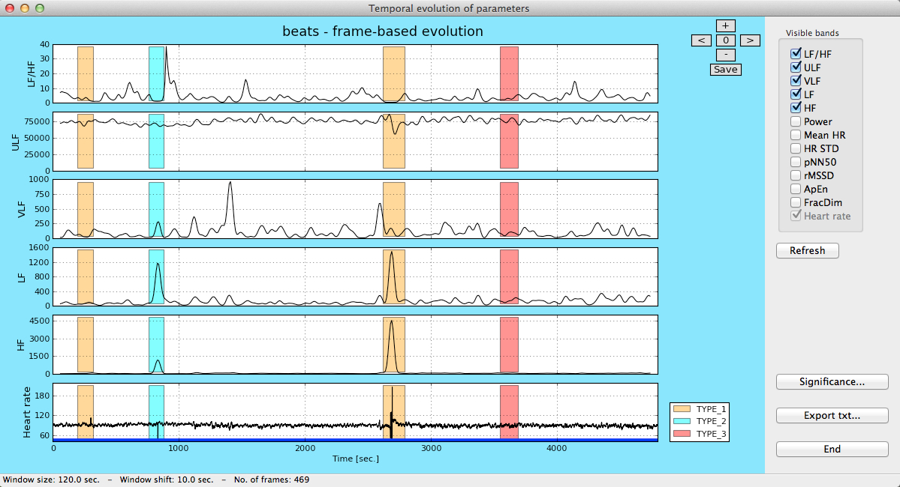Frame-based analysis in gHRV
In the upper right panel users can select which parameters are to be included in the plot.
The Significance button opens a new window containing a plot that shows the distribution of the selected parameter inside/outside an episode, or in two different episodes. A Kolmogorov-Smirnov test for statistic independence is performed on these values and the result of this test is shown at the bottom of the window. Users can select which parameter is to be considered in this study.
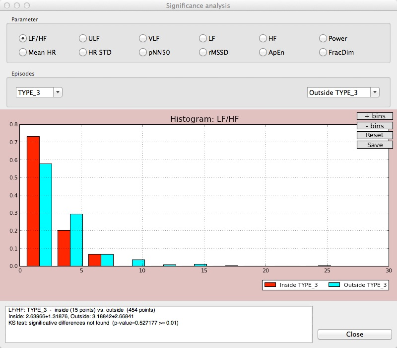Significance study for the LF/HF parameter
A txt report can also be obtained with the Export txt button. By clicking in this button, a window for selecting the parameters to be included appears.
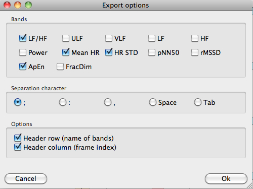Generation of a txt file containing the selected parameters
When the parameters are selected, the report will be saved at the selected directory.
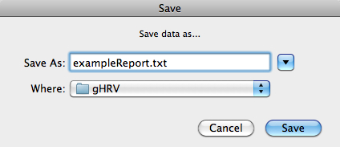Saving a txt file containing frame-based parameters
Poincaré Plot
The last button of the Tools Panel is for obtaining the Poincaré plot, useful for quantifying the self-similarity of signals by representing a scatterplot of each RR interval against the preceding ones. Poincaré plots provide global and detailed beat-to-beat information on the heart behavior.
By clicking on the Poincaré plot button, a plot for the whole record is presented on a new window.
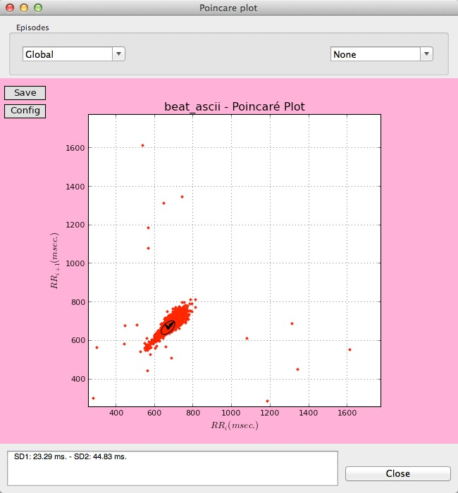Global Poincaré plot
Users can also select different Poincaré plots, among the different episodes and intervals present in the data that are being analyzed.
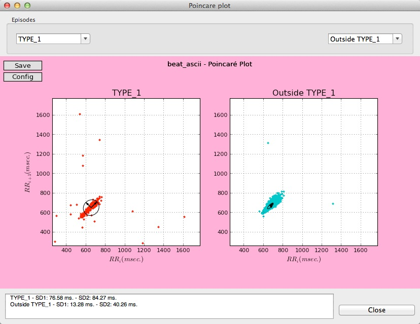Two different Poincaré plots for two types of episodes
The plot can be saved to a file, clicking Save on the upper left corner of the plot.
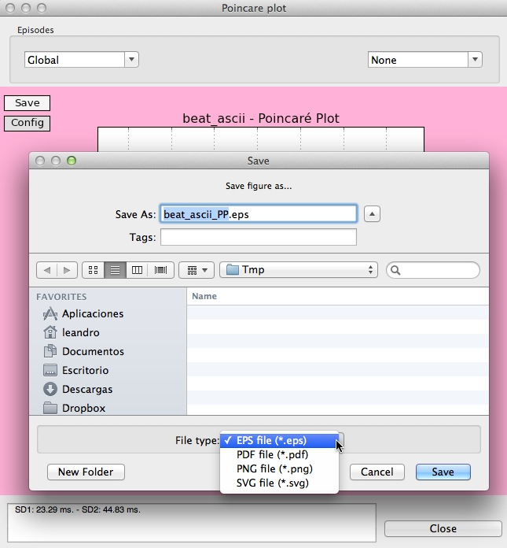Saving a Poincaré plot.
Finally, the limits of the plot can be customized, allowing the users to compare Poincaré plots of different records, by clicking Config on the upper left corner of the plot.
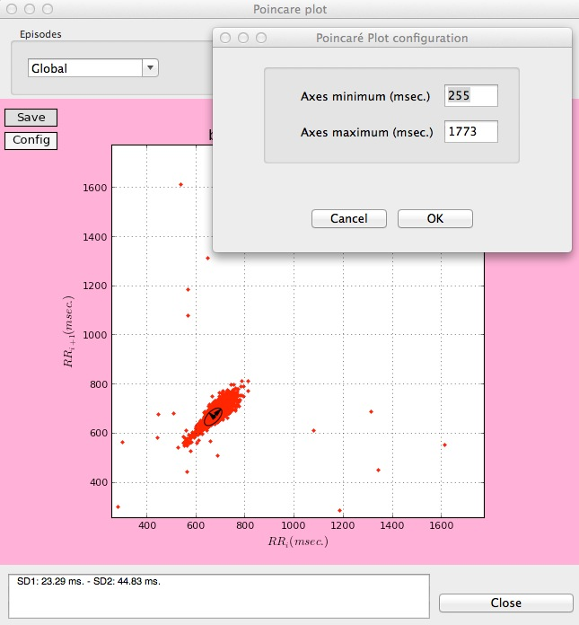Customizing the limits in a Poincaré plot.
Report
A report including the analysis performed in the previous stages can be generated, by clicking the Report button. A resume window including the analysis of the data and results is then presented.
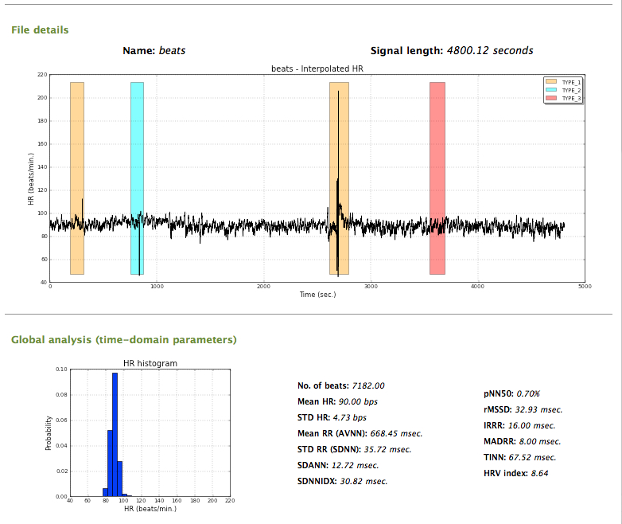Final report (1)
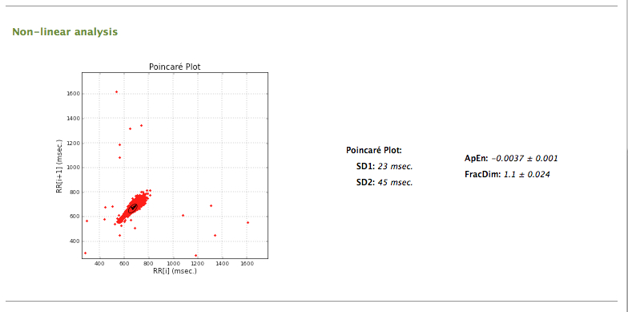Final report (2)
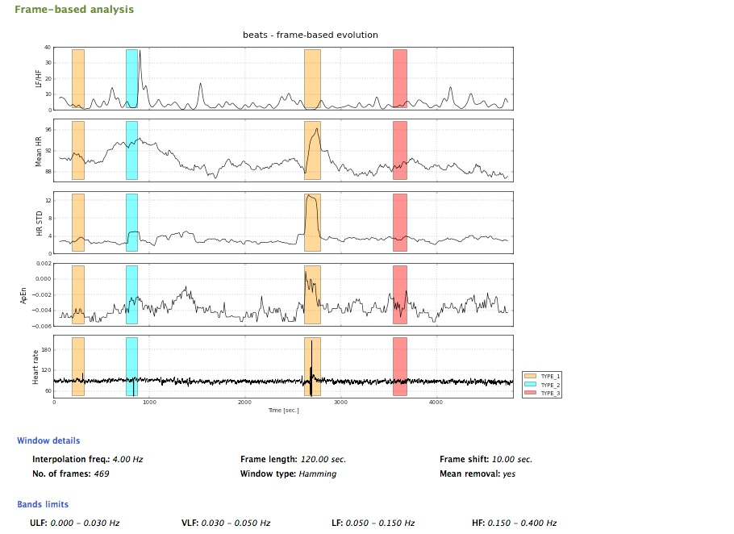Final report (3)
The user can also save a report as an HTML file, by clicking on the Save as HTML... button.
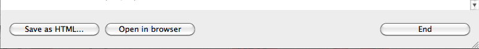Saving options for the final report
At the present moment, the
gHRV Panel
The last panel of the gHRV interface is gHRV panel.
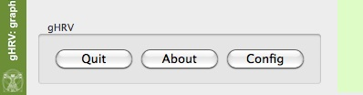. Options for the gHRV panel
About
Click on the About button to obtain information about gHRV.
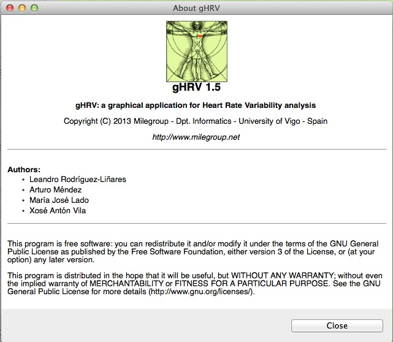About option for the gHRV panel
Config
Config allows users to set values for parameters.
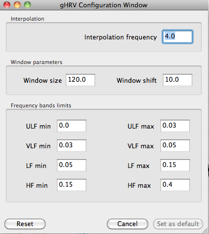Modification of default parameters for spectral analysis
The analysis parameter that are configurable by users are interpolation frequency, window size and shift, and limits for the frequency bands. Just rewrite the value and then press the Set as default button. To retrieve the default values, press the Reset option.
Notice that if there is an active project in gHRV, this function does not change project's settings: to modify settings of project, it must be done by clicking Settings button in the first group of buttons.
Quit
Just click the Quit button if you want to exit the program. A new window asking for confirmation appears.
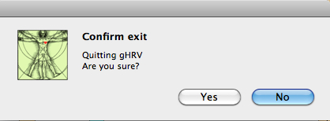Exiting window for gHRV
References
- [Achar06]
- U.R. Acharya, K.P. Joseph, N. Kannathal, C.M., Lim, J.S. Suri, Heart rate variability: a review, Medical and Biomedical Engineering and Computing 44, 1031-1051 (2006).
- [Aksel81]
- S. Akselkrod, D. Gordon, F.A. Ubel, D.C. Shannon, A.C. Barger, R.J. Cohen, Power spectrum analysis of heart rate fluctuation: a quantitative probe of beat to beat cardiovascular control, Science 213, 220-222 (1981)
- [Bogu11]
- Bogunovik, HRV-Frame: Java-based framework for feature extraction from cardiac rythm, Lecture Notes in Computer Science 6747, 96-100 (2011).
- [Chang07]
- F.C. Chang, C.K. Chang, C.C. Chiu, S.F. Hsu, Y.D. Lin, Variations of HRV Analysis in Different Approaches, In Computers in Cardiology 34, 17-20 (2007).
- [Ibra11]
- N.A. Ibrahim, S. Suliadi, S., Generating correlated discrete ordinal data using R and SAS IML, Computer Methods and Programs in Biomedicine, 104, 122e-132e (2011).
- [Jovi11]
- A. Jovic, N. Bogunovik, HRV-Frame: Java-based framework for feature extraction from cardiac rythm, Lecture Notes in Computer Science 6747, 96-100 (2011).
- [Koso11]
- H. Kosorus, J. Honigl, J. Kung, Using R, WEKA and RapidMiner in time series analysis of sensor data for structural health monitoring. Proceedings of DEXA 2011, 306 – 310 (2011).
- [Malik95]
- M. Malik, A.J. Camm, Heart rate variability. Futura (1995)
- [MatHRV]
- http://www.macalester.edu/~kaplan/hrv/doc/
- [Nati09]
- National Instruments. Using LabVIEW for heart rate variability analysis. Published online at http://zone.ni.com/devzone/cda/epd/p/id/5832 on Apr 24, 2009.
- [Pyth]
- http://www.python.org
- [Roca12]
- J. Roca-Pardiñas, M.J. Lado, P.G.Tahoces, C. Cadarso-Suárez, Reducing false positives in a CAD scheme for detecting breast microcalcificacions: a cuantitative study with GAMs, Cancer Prevention, (Alexandros Georgakilas, Ed.), 459-476 (2012).
- [Rodr11]
- L. Rodríguez-Liñares, A.J. Méndez, M.J. Lado, D.N. Olivieri, X.A. Vila, X.A., I. Gómez-Conde, An open source tool for heart rate variability spectral analysis. Computer Methods and Programs in Biomedicine 103, 39-50 (2011).
- [Sun11]
- X. Sun, K. Wu, D. Cook, PKgraph: An R package for graphically diagnosing population pharmacokinetic models. Computer Methods and Programs in Biomedicine, 104, 461-471 (2011).
- [Tarv14]
- M.P. Tarvainen, J.P. Niskanen, J.A. Lipponen, P.O. Ranta-Aho, P.A. Karjalainen, Kubios HRV--heart rate variability analysis software, Computer Methods and Programs in Biomedicine 113(1), 210-220 (2014). doi: 10.1016/j.cmpb.2013.07.024
- [Task96]
- Task Force of the European Society of Cardiology the North American Society of Pacing Electrophysiology, Heart rate variability: standards of measurement, physiological interpretation, and clinical use, Circulation 93, 1043-1065 (1996)
- [Vila97]
- J.A. Vila, F. Palacios, J. Rodríguez-Presedo, M. Fernández-Delgado, P. Félix, S. Barro, Time-frequency analysis of heart-rate variability, IEEE Engineering in Medicine and Biology Magazine, 16, 119-125 (1997).